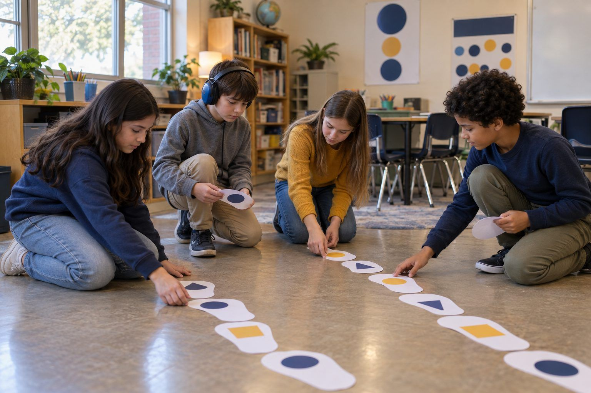

Student learning · Grades 3–5 · 45 minutes
Credit Where It's Due
After their own doodles get "borrowed" without credit, students learn to credit creators, ask permission, and write an honest note whenever AI helped with their work.
Everything students find online was made by someone: a photographer, a writer, a musician, a kid like them. And now some of what students make gets help from AI. In this lesson students feel what it's like when their work is taken without credit, sort situations into Give credit, Ask permission first, Say AI helped, and My own work, then practice writing credit lines and AI Help Notes for a fictional student's poster before writing them for their own project. The message is honest, not scary: AI can help you learn, and saying how it helped is part of owning your work.
In this packet
- Handout A: Credit Sort (card sort)
- Handout B: Rosa's Volcano Poster (reading)
- Handout C: My Credit Lines and AI Help Note (worksheet)
- Facilitator key (last page)
TCEA ELE indicators
- S1.3 I am aware of how AI can assist me in my studies.
- AI2.1 I know how to apply ethical principles when using or developing AI for education.
- AI2.3 I am aware of the importance of transparency and accountability in AI systems.
- S4.1 I know how to take responsibility for my own learning.
Full facilitator guide: mglearn.github.io/eles/activities/credit-where-its-due.html
Handout A for Credit Where It's Due
Credit Sort
All people here are made up. Sort each strip. Say your reason out loud before you place it.
Give credit
Ask permission first
Say AI helped
My own work
Handout A for Credit Where It's Due
Credit Sort: cards to sort
Cut apart the strips. Sort each one onto the mat and be ready to explain why.
Leo puts a photo of a tiger from a nature website in his slideshow.
Amara copies three sentences from an online encyclopedia into her report.
Theo, with his teacher driving, asks an AI chatbot for 5 story title ideas and picks one.
Nia draws her own map of her neighborhood for a project.
Ben wants to put his friend's drawing in the class newsletter.
The teacher uses an AI tool to make a picture of a robot chef for the class poster.
Sofia wants to use a song she found online in her class video.
Omar writes a poem with no help from anyone or anything.
Mia uses an AI spelling checker, and it fixes 4 words in her story.
Diego puts a quote from a book character on his poster.
Grace wants to post a photo she took of her classmates on the class blog.
Kenji, with his mom driving, asks AI to explain fractions, then writes his own explanation in his own words.
Handout B for Credit Where It's Due
Rosa's Volcano Poster
Rosa is a made-up fourth grader. Find every place she used someone else's work or AI help. On the back, write her credit lines and her AI Help Note.
1Rosa Delgado is making a poster about volcanoes for the Maple Hollow Elementary science fair. She wants it to be the best poster in the hallway.
2First, Rosa finds a photo of a volcano erupting at night in the school library's online photo collection. Under the photo it says: "Night Eruption, photo by Sam Okafor." She prints it and glues it in the middle of her poster.
3Next, she reads a library book called Mountains of Fire by Lee Watanabe. She copies one sentence she loves onto her poster: "A volcano is a door to the inside of the Earth."
4Rosa is stuck on a title. At home, her dad opens an AI chatbot and types, "Give me 5 catchy titles for a kid's volcano poster." Rosa likes "Hot Stuff: Inside a Volcano" and changes it to "Hot Stuff: What's Inside a Volcano?"
5Her dad also asks the chatbot for a fun fact. It answers: "The tallest volcano in our solar system is on Mars." It doesn't say where that fact comes from. Rosa writes it in a bright yellow box.
6Rosa's best friend, Mei, drew a great diagram of the layers of a volcano for her own project. Rosa thinks it would look perfect in the corner of her poster.
7Finally, Rosa draws the lava flow arrows and writes the three paragraphs about how volcanoes form, all by herself.
Handout C for Credit Where It's Due
My Credit Lines and AI Help Note
Use this for a real class project. Credit Line: "Title" by Creator, from Where I found it. AI Help Note: I used AI to ___. I checked it by ___. I did ___ myself.
My project is:
Things I used that someone else made, with a credit line for each:
Did AI help? Circle one: YES · NO AI HELPED. If yes, write your AI Help Note: I used AI to ___. I checked it by ___. I did ___ myself.
The parts I made all by myself:
How would I feel if someone took credit for my work?
Why is saying "AI helped" part of being a good learner?
Facilitator only for Credit Where It's Due
Answer key and notes
Handout A: Credit Sort
| Item | Sort | Why |
|---|---|---|
| Leo puts a photo of a tiger from a nature website in his slideshow. | Give credit | The photographer made it. Credit them, and use images your teacher says are OK to use. |
| Amara copies three sentences from an online encyclopedia into her report. | Give credit | Use quotation marks and name the source, or better, put it in her own words and still credit the source. |
| Theo, with his teacher driving, asks an AI chatbot for 5 story title ideas and picks one. | Say AI helped | The idea started with AI, so an AI Help Note keeps it honest. |
| Nia draws her own map of her neighborhood for a project. | My own work | She made it herself. No credit needed, though she can sign it! |
| Ben wants to put his friend's drawing in the class newsletter. | Ask permission first | It's his friend's work. Ask, then credit the friend. |
| The teacher uses an AI tool to make a picture of a robot chef for the class poster. | Say AI helped | Adults follow the same honesty rules. A small note on the poster does it. |
| Sofia wants to use a song she found online in her class video. | Ask permission first | Music belongs to its creators. Use music your teacher approves as free to use, and credit it. |
| Omar writes a poem with no help from anyone or anything. | My own work | All his. He can proudly sign it. |
| Mia uses an AI spelling checker, and it fixes 4 words in her story. | Say AI helped | A short note ("AI helped check my spelling") is honest and easy. |
| Diego puts a quote from a book character on his poster. | Give credit | Name the book and the author. |
| Grace wants to post a photo she took of her classmates on the class blog. | Ask permission first | Her classmates' faces are their private information. Ask them and the teacher first. |
| Kenji, with his mom driving, asks AI to explain fractions, then writes his own explanation in his own words. | Say AI helped | AI helped him learn. He says so, and his own words show what he understands. |